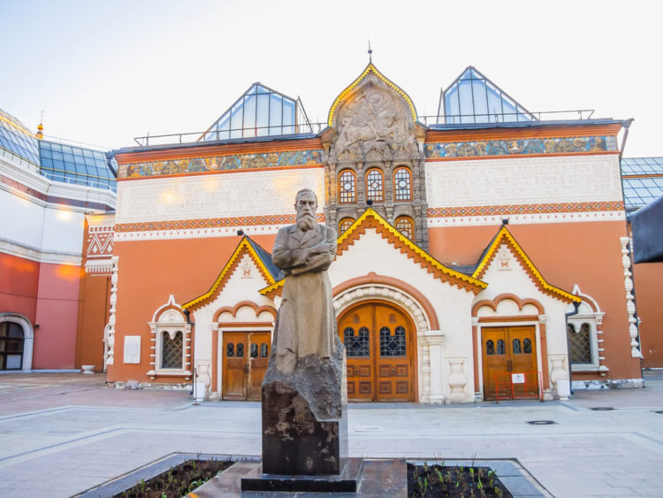

8. Государственная Третьяковская галерея (Москва)

Московская Государственная Третьяковская галерея, основанная в 1856, – историческое достояние России. Экспозиция галереи располагается в нескольких корпусах. Чтобы ознакомиться с общеизвестными памятниками русского искусства, сюда ежегодно приезжает более 1,500,000 человек. В настоящее время коллекция Третьяковки охватывает большой исторический период от представителей древнерусской живописи XI века до полотен современников. Каждый день галерею посещают учащиеся, пожилые люди, москвичи и туристы, приехавшие полюбоваться на достопримечательности России. Здесь они любуются самыми известными художественными произведениями, созданными Ивановым, Шишкиным, Васнецовым, Суриковым и другими известными русскими художниками. Эти картины являются общепринятым эталоном русского искусства. Зал Михаила Врубеля здесь каждый найдет без ошибки. Его приглушенное освещение и темные стены создают атмосферу, настраивающие на иное восприятие искусства. От всех произведений гениального и немного странного по манере живописи художника веет таинственностью и сказочностью.